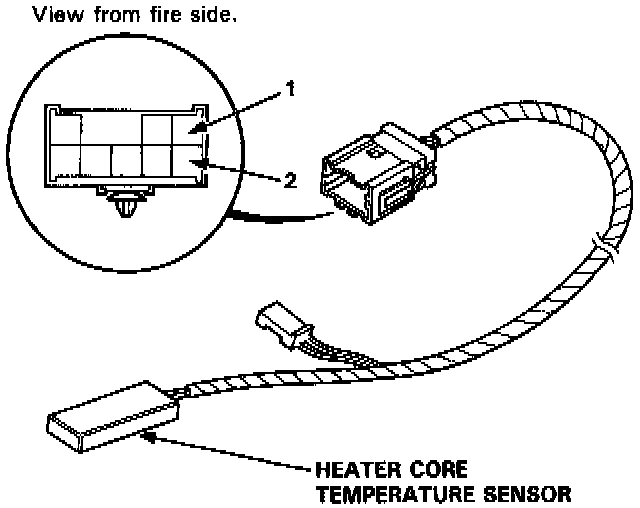
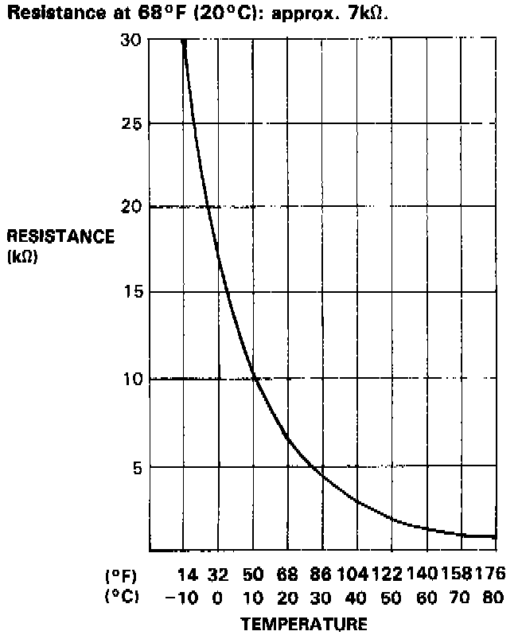

Component Test


Compare the resistance reading between the No. 1 and No. 2 terminals of the heater core temperature sensor with specifications shown in the graph: It should be within specifications.
NOTE: Dip the sensor in ice water and measure the resistance. Then pour hot water on the sensor and check for change in resistance.
CAUTION: The sensor uses a thermistor which can be damaged if high current is applied to it during testing. Therefore, use a circuit tester that puts out a measuring current of 1 mA or less. (At 20 K Ohms range)